CODING AGENTS AS PIXEL WORLD MODELS
traex/GPT-6.1-Sol · 0036
点击播放 · 原生 RGB 像素
逐轮保存的候选
回放视频、检查图与代码变化。
每份候选均可单独播放。实际图片检查记录在下方工具轨迹中。
候选 01播放与检查图
点击播放 · 原生 RGB 像素
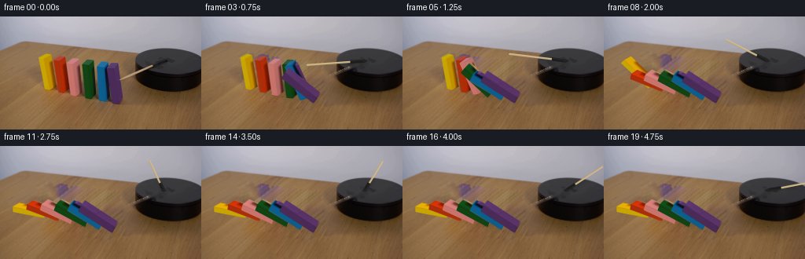
展开代码变化
--- 上一保存版本
+++ 本次保存版本
@@ -0,0 +1,208 @@
+from pathlib import Path
+import numpy as np
+from PIL import Image, ImageDraw
+import cv2
+import math
+import artifact_io
+
+ROOT=Path(__file__).resolve().parent
+S=4; W=256; H=144
+original=np.array(Image.open(ROOT/'first_frame.png').convert('RGB'))
+# The front, side, and top of each wooden domino, measured in the first image.
+# front left top, front right top, back right top, back left top, front left foot
+specs=[
+ [(49.5,52.0),(56.2,53.7),(64.4,49.1),(57.5,47.4),(56.5,92.0)],
+ [(68.0,55.6),(75.2,56.7),(83.1,51.6),(76.1,50.4),(74.0,96.0)],
+ [(85.1,60.0),(93.0,61.4),(101.2,55.0),(94.0,53.3),(89.7,99.5)],
+ [(104.8,62.2),(113.5,63.6),(119.8,56.4),(112.5,55.0),(108.0,103.4)],
+ [(123.1,64.0),(132.9,65.2),(138.0,59.3),(129.5,57.8),(125.7,107.0)],
+ [(136.2,66.0),(145.2,66.3),(149.6,60.0),(140.8,59.7),(142.7,111.1)],
+]
+# Cube geometry keeps the front silhouette and its original small lean.
+blocks=[]
+for sp in specs:
+ a,b,c,d,base=map(lambda v:np.array(v,dtype=float),sp)
+ width=b-a; depth=(d-a+c-b)/2; height=a-base
+ # A regularized cuboid is sufficient at this optical resolution.
+ old=np.array([base,base+width,base+width+depth,base+depth,a,b,b+depth,a+depth])
+ blocks.append(dict(base=base,width=width,depth=depth,height=height,old=old))
+
+# Clean the rotating arm, while keeping the black disk and the table locked.
+mask=np.zeros((H,W),np.uint8)
+cv2.line(mask,(153,81),(196,63),255,4)
+cv2.fillPoly(mask,[np.array([(188,64),(203,53),(210,52),(216,56),(206,61),(198,69),(188,67)],np.int32)],255)
+clean=cv2.inpaint(original,mask,3,cv2.INPAINT_TELEA)
+# Restore undisturbed portions of the purple paint under the original tip.
+for y in range(76,86):
+ for x in range(150,156):
+ if x<152+(y-81)*.15:
+ clean[y,x]=original[y,max(147,x-4)]
+
+# Reconstruct only the table exposed by the falling blocks. Texture is copied
+# along the grain from visible parts of this same input photograph.
+hole=np.zeros((H,W),np.uint8)
+for b in blocks:
+ hull=cv2.convexHull(b['old'].astype(np.float32)).astype(np.int32)
+ cv2.fillConvexPoly(hole,hull,255)
+hole=cv2.dilate(hole,np.ones((5,5),np.uint8))
+shadowpoly=np.array([(53,88),(74,88),(94,96),(120,99),(151,103),(167,112),(163,120),(133,119),(98,113),(72,105),(54,98)],np.int32)
+cv2.fillPoly(hole,[shadowpoly],255)
+# Smaller protected area around the front edge of the platform.
+hole[:,170:]=0
+smooth=cv2.inpaint(clean,hole,5,cv2.INPAINT_NS).astype(float)
+softsrc=cv2.GaussianBlur(clean,(0,0),3.5).astype(float)
+texture=clean.astype(float)-softsrc
+ys,xs=np.indices((H,W)); sy=np.zeros_like(ys);sx=np.zeros_like(xs)
+known=(hole==0)&(mask==0)
+for y in range(H):
+ for x in range(W):
+ if hole[y,x]:
+ # Continuous direction of the wood fibres; choose a clean visible sample.
+ best=None
+ for delta in range(20,120):
+ xx=round(x-1.25*delta); yy=y+delta
+ if 2<=xx<W-2 and 38<=yy<H-2 and known[yy,xx]:
+ best=(yy,xx);break
+ if best is None:
+ for delta in range(22,110):
+ xx=round(x+1.25*delta); yy=y-delta
+ if 2<=xx<166 and yy>40 and known[yy,xx]:
+ best=(yy,xx);break
+ if best is None:best=(128, max(5,min(240,x)))
+ sy[y,x],sx[y,x]=best
+ else: sy[y,x]=y;sx[y,x]=x
+sample=texture[sy,sx]
+# Preserve broader linear grain features too, without importing the lighting of
+# the sampled region.
+medium=cv2.GaussianBlur(clean,(0,0),1.3).astype(float)-cv2.GaussianBlur(clean,(0,0),7).astype(float)
+bg=smooth + 1.25*sample + .75*medium[sy,sx]
+bg=np.clip(bg,0,255).astype(np.uint8)
+bg[hole==0]=clean[hole==0]
+bigbg=cv2.resize(bg,(W*S,H*S),interpolation=cv2.INTER_CUBIC).astype(float)
+bigsource=cv2.resize(clean,(W*S,H*S),interpolation=cv2.INTER_CUBIC).astype(float)
+
+faces=[([0,1,5,4],'front'),([1,2,6,5],'right'),([4,5,6,7],'top'),([3,0,4,7],'left'),([2,3,7,6],'back')]
+# The three exposed original faces carry the photographed grain and highlights.
+sourcefaces={'front':[0,1,5,4],'right':[1,2,6,5],'top':[4,5,6,7], 'left':[1,2,6,5],'back':[0,1,5,4]}
+
+def vertices(b,ang):
+ c=np.cos(ang); s=np.sin(ang)
+ base=b['base'].copy(); width=b['width']; depth=b['depth']; h=b['height']
+ length=np.linalg.norm(h)*.985
+ # Each block pivots about the edge nearest its neighbour to the left.
+ newheight=h*c+np.array([-length,-length*.205])*s
+ newwidth=width*c+np.array([0,-np.linalg.norm(width)*.985])*s
+ return np.array([base,base+newwidth,base+newwidth+depth,base+depth,base+newheight,base+newheight+newwidth,base+newheight+newwidth+depth,base+newheight+depth])
+
+def angle_at(i,t):
+ start=.075+(5-i)*.285
+ duration=.73
+ limit=[90,80,75,71,67,64][i]
+ u=(t-start)/duration
+ if u<=0:return 0.
+ if u<1:return math.radians(limit*u**1.65)
+ # Contact impulse followed by very small, quickly damped settling.
+ q=(u-1)*duration
+ bounce=2.8*np.exp(-q*7.5)*max(0,np.sin(q*22))
+ return math.radians(limit-bounce)
+
+def draw_block(canvas,i,ang):
+ b=blocks[i];v=vertices(b,ang)
+ # Surface normals are found directly from the projected winding.
+ drawfaces=[]
+ for ids,name in faces:
+ p=v[ids]
+ area=sum(p[j,0]*p[(j+1)%4,1]-p[(j+1)%4,0]*p[j,1] for j in range(4))
+ if area<-.1:drawfaces.append((ids,name))
+ for ids,name in drawfaces:
+ src=b['old'][sourcefaces[name]].astype(np.float32)*S
+ dst=v[ids].astype(np.float32)*S
+ matrix=cv2.getPerspectiveTransform(src,dst)
+ warped=cv2.warpPerspective(bigsource,matrix,(W*S,H*S),flags=cv2.INTER_LINEAR,borderMode=cv2.BORDER_REPLICATE)
+ matte=np.zeros((H*S,W*S),np.uint8)
+ cv2.fillConvexPoly(matte,np.round(dst).astype(np.int32),255,lineType=cv2.LINE_AA)
+ alpha=matte.astype(float)/255
+ # The side brightens as it turns upward toward the soft overhead illumination.
+ if name=='right': shade=1+.21*np.sin(ang)
+ elif name=='top':shade=1-.16*np.sin(ang)
+ elif name=='left':shade=.92
+ else:shade=1.0
+ warped=np.clip(warped*shade,0,255)
+ canvas[:]=canvas*(1-alpha[:,:,None])+warped*alpha[:,:,None]
+ return v
+
+def stick_points(theta):
+ # Orthographic projection of a horizontal circular path, clockwise viewed
+ # from above. Its first projected endpoint is the photographed tip.
+ pivot=np.array([208.0,56.4])
+ theta0=np.radians(140.5)
+ ex=74;ey=38.5
+ end=pivot+np.array([ex*np.cos(theta),ey*np.sin(theta)])
+ return pivot,end
+
+THETA0=np.radians(140.5)
+
+def draw_arm(canvas,t):
+ theta=THETA0+np.radians(42)*t
+ p,e=stick_points(theta)
+ r=e-p; norm=np.linalg.norm(r); unit=r/norm
+ a=p+r*.245
+ # Faint arm shadow only on the top face of the disk.
+ disk=np.zeros((H*S,W*S),np.uint8)
+ cv2.ellipse(disk,(219*S,58*S),(47*S,18*S),3,0,360,255,-1)
+ sh=np.zeros_like(disk)
+ cv2.line(sh,tuple(np.round((p+[1.1,2])*S).astype(int)),tuple(np.round((e+[1.1,2])*S).astype(int)),145,3*S,cv2.LINE_AA)
+ sh=cv2.GaussianBlur(sh,(0,0),1.6*S).astype(float)/255 * (disk/255)*.20
+ canvas[:]*=(1-sh[:,:,None])
+ # Draw the slim cylindrical wood shaft with a light highlight and dark rim.
+ shaft=np.zeros((H*S,W*S),np.uint8)
+ cv2.line(shaft,tuple(np.round(a*S).astype(int)),tuple(np.round(e*S).astype(int)),255,round(1.65*S),cv2.LINE_AA)
+ # Subtle taper at the striking tip.
+ alpha=shaft.astype(float)/255
+ y,x=np.indices(shaft.shape); px=x/S;py=y/S
+ side=(-unit[1]*(px-a[0])+unit[0]*(py-a[1]))
+ tint=np.stack([203+side*18,179+side*15,134+side*11],axis=-1)
+ longitudinal=(px*unit[0]+py*unit[1])
+ tint+= (np.sin(longitudinal*2.7)*1.7)[:,:,None]
+ canvas[:]=canvas*(1-alpha[:,:,None])+np.clip(tint,0,255)*alpha[:,:,None]
+ # Black mounting sleeve rotates with the stick, not the circular base.
+ u=r*.25; perp=np.array([-unit[1],unit[0]])*2.0
+ poly=np.array([p+perp,p+u+perp,p+u-perp,p-perp])
+ layer=np.zeros_like(shaft)
+ cv2.fillConvexPoly(layer,np.round(poly*S).astype(np.int32),255,cv2.LINE_AA)
+ alp=layer.astype(float)/255
+ canvas[:]=canvas*(1-alp[:,:,None])+np.array([29,29,30])*alp[:,:,None]
+ # small raised hub and edge reflection
+ cv2.line(canvas,tuple(np.round((p+perp*.6)*S).astype(int)),tuple(np.round((p+u+perp*.6)*S).astype(int)),(43.,43.,44.),max(1,S//2),cv2.LINE_AA)
+ cv2.ellipse(canvas,tuple(np.round(p*S).astype(int)),(int(3*S),int(1.5*S)),0,0,360,(35.,35.,36.),-1,cv2.LINE_AA)
+
+
+def make_frame(t):
+ canvas=bigbg.copy()
+ angles=[angle_at(i,t) for i in range(6)]
+ # Soft contact shadows retain the tabletop's texture.
+ shadow=np.zeros((H*S,W*S),float)
+ for i,b in enumerate(blocks):
+ v=vertices(b,angles[i])
+ # Project the eight corners on the table in the direction of the room light.
+ height= - (v[:,1]- (b['base'][1]+(v[:,0]-b['base'][0])*.205))
+ ground=v.copy();ground[:,0]+=np.maximum(0,height)*.17
+ ground[:,1]+=np.maximum(0,height)*1.04
+ m=np.zeros((H*S,W*S),np.uint8)
+ hull=cv2.convexHull(np.round(ground*S).astype(np.int32))
+ cv2.fillConvexPoly(m,hull,255)
+ m=cv2.GaussianBlur(m,(0,0),1.7*S).astype(float)/255
+ shadow=np.maximum(shadow,m*.19)
+ canvas*=1-shadow[:,:,None]
+ for i in range(6):draw_block(canvas,i,angles[i])
+ draw_arm(canvas,t)
+ out=cv2.resize(np.clip(canvas,0,255).astype(np.uint8),(W,H),interpolation=cv2.INTER_AREA)
+ return out
+
+
+def main():
+ frames=np.array([original]+[make_frame(i/4) for i in range(1,20)],dtype=np.uint8)
+ artifact_io.save(frames,ROOT)
+ Image.fromarray(bg).save(ROOT/'.tmp/background.png')
+
+if __name__=='__main__':main()
候选 02播放与检查图
点击播放 · 原生 RGB 像素
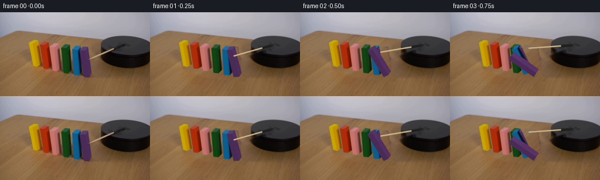
展开代码变化
--- 上一保存版本 +++ 本次保存版本 @@ -29,7 +29,7 @@ # Clean the rotating arm, while keeping the black disk and the table locked. mask=np.zeros((H,W),np.uint8) -cv2.line(mask,(153,81),(196,63),255,4) +cv2.line(mask,(152,81),(199,62),255,8) cv2.fillPoly(mask,[np.array([(188,64),(203,53),(210,52),(216,56),(206,61),(198,69),(188,67)],np.int32)],255) clean=cv2.inpaint(original,mask,3,cv2.INPAINT_TELEA) # Restore undisturbed portions of the purple paint under the original tip. @@ -52,31 +52,27 @@ smooth=cv2.inpaint(clean,hole,5,cv2.INPAINT_NS).astype(float) softsrc=cv2.GaussianBlur(clean,(0,0),3.5).astype(float) texture=clean.astype(float)-softsrc -ys,xs=np.indices((H,W)); sy=np.zeros_like(ys);sx=np.zeros_like(xs) -known=(hole==0)&(mask==0) -for y in range(H): - for x in range(W): - if hole[y,x]: - # Continuous direction of the wood fibres; choose a clean visible sample. - best=None - for delta in range(20,120): - xx=round(x-1.25*delta); yy=y+delta - if 2<=xx<W-2 and 38<=yy<H-2 and known[yy,xx]: - best=(yy,xx);break - if best is None: - for delta in range(22,110): - xx=round(x+1.25*delta); yy=y-delta - if 2<=xx<166 and yy>40 and known[yy,xx]: - best=(yy,xx);break - if best is None:best=(128, max(5,min(240,x))) - sy[y,x],sx[y,x]=best - else: sy[y,x]=y;sx[y,x]=x -sample=texture[sy,sx] -# Preserve broader linear grain features too, without importing the lighting of -# the sampled region. -medium=cv2.GaussianBlur(clean,(0,0),1.3).astype(float)-cv2.GaussianBlur(clean,(0,0),7).astype(float) -bg=smooth + 1.25*sample + .75*medium[sy,sx] -bg=np.clip(bg,0,255).astype(np.uint8) +ys,xs=np.indices((H,W)) +# Recover a table-only colour field from the visible surface. A modest +# polynomial models the illumination, not the wood grain. +table=(hole==0)&(mask==0)&(ys>=50)&(xs<167) +table &= (cv2.dilate(hole,np.ones((13,13),np.uint8))==0) +features=np.stack([np.ones_like(xs),xs/256,ys/144,(xs/256)**2,(xs/256)*(ys/144),(ys/144)**2],axis=-1) +coeff=np.linalg.lstsq(features[table],clean[table],rcond=None)[0] +light=features@coeff +# A clean lower strip is remapped in grain-aligned coordinates. Every sample +# is part of the provided photograph, well clear of the objects and shadows. +mapy=(126+np.mod(ys*.41,14)).astype(np.float32) +mapx=(xs+1.22*(ys-mapy)).astype(np.float32) +mapx=np.clip(mapx,5,249) +sampled=cv2.remap(clean.astype(np.float32),mapx,mapy,cv2.INTER_LINEAR) +samplefeatures=np.stack([np.ones_like(xs),mapx/256,mapy/144,(mapx/256)**2,(mapx/256)*(mapy/144),(mapy/144)**2],axis=-1) +samplelight=samplefeatures@coeff +reconstructed=light+sampled-samplelight +# Blend the unknown region seamlessly back into unchanged background pixels. +edge=cv2.distanceTransform(hole,cv2.DIST_L2,3) +weight=np.minimum(1,edge/4.)[:,:,None] +bg=np.clip(clean.astype(float)*(1-weight)+reconstructed*weight,0,255).astype(np.uint8) bg[hole==0]=clean[hole==0] bigbg=cv2.resize(bg,(W*S,H*S),interpolation=cv2.INTER_CUBIC).astype(float) bigsource=cv2.resize(clean,(W*S,H*S),interpolation=cv2.INTER_CUBIC).astype(float) @@ -91,13 +87,13 @@ length=np.linalg.norm(h)*.985 # Each block pivots about the edge nearest its neighbour to the left. newheight=h*c+np.array([-length,-length*.205])*s - newwidth=width*c+np.array([0,-np.linalg.norm(width)*.985])*s + newwidth=width*c+np.array([0,-np.linalg.norm(width)*.91])*s return np.array([base,base+newwidth,base+newwidth+depth,base+depth,base+newheight,base+newheight+newwidth,base+newheight+newwidth+depth,base+newheight+depth]) def angle_at(i,t): start=.075+(5-i)*.285 duration=.73 - limit=[90,80,75,71,67,64][i] + limit=[90,79.3,74.1,72.2,69.7,69.7][i] u=(t-start)/duration if u<=0:return 0. if u<1:return math.radians(limit*u**1.65) @@ -116,6 +112,7 @@ if area<-.1:drawfaces.append((ids,name)) for ids,name in drawfaces: src=b['old'][sourcefaces[name]].astype(np.float32)*S + centre=src.mean(axis=0); src=centre+(src-centre)*.935 dst=v[ids].astype(np.float32)*S matrix=cv2.getPerspectiveTransform(src,dst) warped=cv2.warpPerspective(bigsource,matrix,(W*S,H*S),flags=cv2.INTER_LINEAR,borderMode=cv2.BORDER_REPLICATE)
候选 03播放与检查图
点击播放 · 原生 RGB 像素

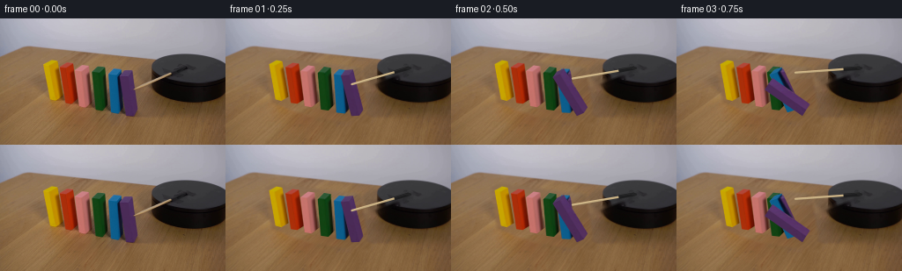
展开代码变化
--- 上一保存版本 +++ 本次保存版本 @@ -44,7 +44,7 @@ for b in blocks: hull=cv2.convexHull(b['old'].astype(np.float32)).astype(np.int32) cv2.fillConvexPoly(hole,hull,255) -hole=cv2.dilate(hole,np.ones((5,5),np.uint8)) +hole=cv2.dilate(hole,np.ones((11,11),np.uint8)) shadowpoly=np.array([(53,88),(74,88),(94,96),(120,99),(151,103),(167,112),(163,120),(133,119),(98,113),(72,105),(54,98)],np.int32) cv2.fillPoly(hole,[shadowpoly],255) # Smaller protected area around the front edge of the platform.
候选 04播放与检查图
点击播放 · 原生 RGB 像素
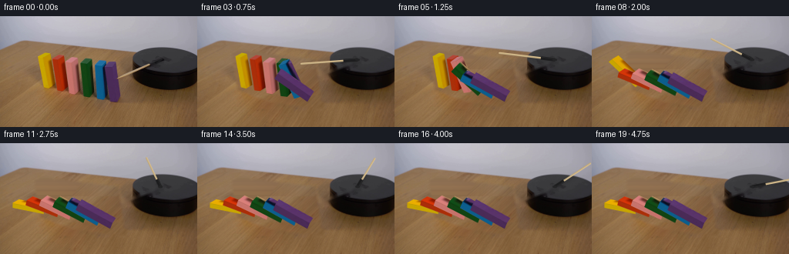
展开代码变化
--- 上一保存版本 +++ 本次保存版本 @@ -62,8 +62,8 @@ light=features@coeff # A clean lower strip is remapped in grain-aligned coordinates. Every sample # is part of the provided photograph, well clear of the objects and shadows. -mapy=(126+np.mod(ys*.41,14)).astype(np.float32) -mapx=(xs+1.22*(ys-mapy)).astype(np.float32) +mapy=(126+ys*.115).astype(np.float32) +mapx=(85+.70*xs+.875*(ys-mapy)).astype(np.float32) mapx=np.clip(mapx,5,249) sampled=cv2.remap(clean.astype(np.float32),mapx,mapy,cv2.INTER_LINEAR) samplefeatures=np.stack([np.ones_like(xs),mapx/256,mapy/144,(mapx/256)**2,(mapx/256)*(mapy/144),(mapy/144)**2],axis=-1) @@ -71,7 +71,7 @@ reconstructed=light+sampled-samplelight # Blend the unknown region seamlessly back into unchanged background pixels. edge=cv2.distanceTransform(hole,cv2.DIST_L2,3) -weight=np.minimum(1,edge/4.)[:,:,None] +weight=np.minimum(1,edge/5.)[:,:,None] bg=np.clip(clean.astype(float)*(1-weight)+reconstructed*weight,0,255).astype(np.uint8) bg[hole==0]=clean[hole==0] bigbg=cv2.resize(bg,(W*S,H*S),interpolation=cv2.INTER_CUBIC).astype(float)
候选 05播放与检查图
可观测工具轨迹
实际执行的命令与返回图片。
命令 1exit 0
/bin/bash -lc 'ls -la && cat prompt.txt && cat GENERATION_RULES.md'
命令 2exit 0
/bin/bash -lc "cat artifact_io.py && python - <<'PY'
from PIL import Image
im=Image.open('first_frame.png');print(im.size);im.resize((1024,576)).save('.tmp/initial.png')
PY"命令 3exit 0
/bin/bash -lc "python - <<'PY'
import cv2,numpy as np
from PIL import Image
im=Image.open('first_frame.png');im.crop((42,40,161,116)).resize((952,608)).save('.tmp/blocks.png')
print(cv2.__version__)
PY"命令 4exit 0
/bin/bash -lc "python - <<'PY'
from PIL import Image
Image.open('first_frame.png').crop((145,36,256,102)).resize((888,528)).save('.tmp/platform.png')
PY"命令 5exit 0
/bin/bash -lc "cat > .tmp/bgtest.py <<'PY'
import cv2,numpy as np
from PIL import Image,ImageDraw
im=np.array(Image.open('first_frame.png'))
m=Image.new('L',(256,144));d=ImageDraw.Draw(m)
# blocks plus shadows
poly=[(48,47),(60,45),(71,50),(82,49),(96,51),(106,54),(117,54),(127,56),(147,57),(155,73),(166,111),(163,121),(139,122),(106,117),(76,108),(57,101)]
d.polygon(poly,fill=255)
mask=np.array(m)
for meth,n in [(cv2.INPAINT_TELEA,'telea'),(cv2.INPAINT_NS,'ns')]:
b=cv2.inpaint(im,mask,4,meth);Image.fromarray(b).resize((1024,576)).save('.tmp/bg_'+n+'.png')
PY
python .tmp/bgtest.py"命令 6exit 0
/bin/bash -lc "python - <<'PY'
from PIL import Image,ImageDraw
im=Image.open('first_frame.png').resize((1536,864))
d=ImageDraw.Draw(im)
for x in range(40,166,5):
d.line([(x*6,40*6),(x*6,120*6)], fill=(220,220,220),width=1);d.text((x*6,38*6),str(x),fill='white')
for y in range(45,116,5):
d.line([(40*6,y*6),(164*6,y*6)], fill=(220,220,220),width=1);d.text((36*6,y*6),str(y),fill='white')
im.crop((200,215,1000,720)).save('.tmp/grid.png')
PY"命令 7exit 0
/bin/bash -lc "cat > generate.py <<'PY'
from pathlib import Path
import numpy as np
from PIL import Image, ImageDraw
import cv2
import math
import artifact_io
ROOT=Path(__file__).resolve().parent
S=4; W=256; H=144
original=np.array(Image.open(ROOT/'first_frame.png').convert('RGB'))
# The front, side, and top of each wooden domino, measured in the first image.
# front left top, front right top, back right top, back left top, front left foot
specs=[
[(49.5,52.0),(56.2,53.7),(64.4,49.1),(57.5,47.4),(56.5,92.0)],
[(68.0,55.6),(75.2,56.7),(83.1,51.6),(76.1,50.4),(74.0,96.0)],
[(85.1,60.0),(93.0,61.4),(101.2,55.0),(94.0,53.3),(89.7,99.5)],
[(104.8,62.2),(113.5,63.6),(119.8,56.4),(112.5,55.0),(108.0,103.4)],
[(123.1,64.0),(132.9,65.2),(138.0,59.3),(129.5,57.8),(125.7,107.0)],
[(136.2,66.0),(145.2,66.3),(149.6,60.0),(140.8,59.7),(142.7,111.1)],
]
# Cube geometry keeps the front silhouette and its original small lean.
blocks=[]
for sp in specs:
a,b,c,d,base=map(lambda v:np.array(v,dtype=float),sp)
width=b-a; depth=(d-a+c-b)/2; height=a-base
# A regularized cuboid is sufficient at this optical resolution.
old=np.array([base,base+width,base+width+depth,base+depth,a,b,b+depth,a+depth])
blocks.append(dict(base=base,width=width,depth=depth,height=height,old=old))
# Clean the rotating arm, while keeping the black disk and the table locked.
mask=np.zeros((H,W),np.uint8)
cv2.line(mask,(153,81),(196,63),255,4)
cv2.fillPoly(mask,[np.array([(188,64),(203,53),(210,52),(216,56),(206,61),(198,69),(188,67)],np.int32)],255)
clean=cv2.inpaint(original,mask,3,cv2.INPAINT_TELEA)
# Restore undisturbed portions of the purple paint under the original tip.
for y in range(76,86):
for x in range(150,156):
if x<152+(y-81)*.15:
clean[y,x]=original[y,max(147,x-4)]
# Reconstruct only the table exposed by the falling blocks. Texture is copied
# along the grain from visible parts of this same input photograph.
hole=np.zeros((H,W),np.uint8)
for b in blocks:
hull=cv2.convexHull(b['old'].astype(np.float32)).astype(np.int32)
cv2.fillConvexPoly(hole,hull,255)
hole=cv2.dilate(hole,np.ones((5,5),np.uint8))
shadowpoly=np.array([(53,88),(74,88),(94,96),(120,99),(151,103),(167,112),(163,120),(133,119),(98,113),(72,105),(54,98)],np.int32)
cv2.fillPoly(hole,[shadowpoly],255)
# Smaller protected area around the front edge of the platform.
hole[:,170:]=0
smooth=cv2.inpaint(clean,hole,5,cv2.INPAINT_NS).astype(float)
softsrc=cv2.GaussianBlur(clean,(0,0),3.5).astype(float)
texture=clean.astype(float)-softsrc
ys,xs=np.indices((H,W)); sy=np.zeros_like(ys);sx=np.zeros_like(xs)
known=(hole==0)&(mask==0)
for y in range(H):
for x in range(W):
if hole[y,x]:
# Continuous direction of the wood fibres; choose a clean visible sample.
best=None
for delta in range(20,120):
xx=round(x-1.25*delta); yy=y+delta
if 2<=xx<W-2 and 38<=yy<H-2 and known[yy,xx]:
best=(yy,xx);break
if best is None:
for delta in range(22,110):
xx=round(x+1.25*delta); yy=y-delta
if 2<=xx<166 and yy>40 and known[yy,xx]:
best=(yy,xx);break
if best is None:best=(128, max(5,min(240,x)))
sy[y,x],sx[y,x]=best
else: sy[y,x]=y;sx[y,x]=x
sample=texture[sy,sx]
# Preserve broader linear grain features too, without importing the lighting of
# the sampled region.
medium=cv2.GaussianBlur(clean,(0,0),1.3).astype(float)-cv2.GaussianBlur(clean,(0,0),7).astype(float)
bg=smooth + 1.25*sample + .75*medium[sy,sx]
bg=np.clip(bg,0,255).astype(np.uint8)
bg[hole==0]=clean[hole==0]
bigbg=cv2.resize(bg,(W*S,H*S),interpolation=cv2.INTER_CUBIC).astype(float)
bigsource=cv2.resize(clean,(W*S,H*S),interpolation=cv2.INTER_CUBIC).astype(float)
faces=[([0,1,5,4],'front'),([1,2,6,5],'right'),([4,5,6,7],'top'),([3,0,4,7],'left'),([2,3,7,6],'back')]
# The three exposed original faces carry the photographed grain and highlights.
sourcefaces={'front':[0,1,5,4],'right':[1,2,6,5],'top':[4,5,6,7], 'left':[1,2,6,5],'back':[0,1,5,4]}
def vertices(b,ang):
c=np.cos(ang); s=np.sin(ang)
base=b['base'].copy(); width=b['width']; depth=b['depth']; h=b['height']
length=np.linalg.norm(h)*.985
# Each block pivots about the edge nearest its neighbour to the left.
newheight=h*c+np.array([-length,-length*.205])*s
newwidth=width*c+np.array([0,-np.linalg.norm(width)*.985])*s
return np.array([base,base+newwidth,base+newwidth+depth,base+depth,base+newheight,base+newheight+newwidth,base+newheight+newwidth+depth,base+newheight+depth])
def angle_at(i,t):
start=.075+(5-i)*.285
duration=.73
limit=[90,80,75,71,67,64][i]
u=(t-start)/duration
if u<=0:return 0.
if u<1:return math.radians(limit*u**1.65)
# Contact impulse followed by very small, quickly damped settling.
q=(u-1)*duration
bounce=2.8*np.exp(-q*7.5)*max(0,np.sin(q*22))
return math.radians(limit-bounce)
def draw_block(canvas,i,ang):
b=blocks[i];v=vertices(b,ang)
# Surface normals are found directly from the projected winding.
drawfaces=[]
for ids,name in faces:
p=v[ids]
area=sum(p[j,0]*p[(j+1)%4,1]-p[(j+1)%4,0]*p[j,1] for j in range(4))
if area<-.1:drawfaces.append((ids,name))
for ids,name in drawfaces:
src=b['old'][sourcefaces[name]].astype(np.float32)*S
dst=v[ids].astype(np.float32)*S
matrix=cv2.getPerspectiveTransform(src,dst)
warped=cv2.warpPerspective(bigsource,matrix,(W*S,H*S),flags=cv2.INTER_LINEAR,borderMode=cv2.BORDER_REPLICATE)
matte=np.zeros((H*S,W*S),np.uint8)
cv2.fillConvexPoly(matte,np.round(dst).astype(np.int32),255,lineType=cv2.LINE_AA)
alpha=matte.astype(float)/255
# The side brightens as it turns upward toward the soft overhead illumination.
if name=='right': shade=1+.21*np.sin(ang)
elif name=='top':shade=1-.16*np.sin(ang)
elif name=='left':shade=.92
else:shade=1.0
warped=np.clip(warped*shade,0,255)
canvas[:]=canvas*(1-alpha[:,:,None])+warped*alpha[:,:,None]
return v
def stick_points(theta):
# Orthographic projection of a horizontal circular path, clockwise viewed
# from above. Its first projected endpoint is the photographed tip.
pivot=np.array([208.0,56.4])
theta0=np.radians(140.5)
ex=74;ey=38.5
end=pivot+np.array([ex*np.cos(theta),ey*np.sin(theta)])
return pivot,end
THETA0=np.radians(140.5)
def draw_arm(canvas,t):
theta=THETA0+np.radians(42)*t
p,e=stick_points(theta)
r=e-p; norm=np.linalg.norm(r); unit=r/norm
a=p+r*.245
# Faint arm shadow only on the top face of the disk.
disk=np.zeros((H*S,W*S),np.uint8)
cv2.ellipse(disk,(219*S,58*S),(47*S,18*S),3,0,360,255,-1)
sh=np.zeros_like(disk)
cv2.line(sh,tuple(np.round((p+[1.1,2])*S).astype(int)),tuple(np.round((e+[1.1,2])*S).astype(int)),145,3*S,cv2.LINE_AA)
sh=cv2.GaussianBlur(sh,(0,0),1.6*S).astype(float)/255 * (disk/255)*.20
canvas[:]*=(1-sh[:,:,None])
# Draw the slim cylindrical wood shaft with a light highlight and dark rim.
shaft=np.zeros((H*S,W*S),np.uint8)
cv2.line(shaft,tuple(np.round(a*S).astype(int)),tuple(np.round(e*S).astype(int)),255,round(1.65*S),cv2.LINE_AA)
# Subtle taper at the striking tip.
alpha=shaft.astype(float)/255
y,x=np.indices(shaft.shape); px=x/S;py=y/S
side=(-unit[1]*(px-a[0])+unit[0]*(py-a[1]))
tint=np.stack([203+side*18,179+side*15,134+side*11],axis=-1)
longitudinal=(px*unit[0]+py*unit[1])
tint+= (np.sin(longitudinal*2.7)*1.7)[:,:,None]
canvas[:]=canvas*(1-alpha[:,:,None])+np.clip(tint,0,255)*alpha[:,:,None]
# Black mounting sleeve rotates with the stick, not the circular base.
u=r*.25; perp=np.array([-unit[1],unit[0]])*2.0
poly=np.array([p+perp,p+u+perp,p+u-perp,p-perp])
layer=np.zeros_like(shaft)
cv2.fillConvexPoly(layer,np.round(poly*S).astype(np.int32),255,cv2.LINE_AA)
alp=layer.astype(float)/255
canvas[:]=canvas*(1-alp[:,:,None])+np.array([29,29,30])*alp[:,:,None]
# small raised hub and edge reflection
cv2.line(canvas,tuple(np.round((p+perp*.6)*S).astype(int)),tuple(np.round((p+u+perp*.6)*S).astype(int)),(43.,43.,44.),max(1,S//2),cv2.LINE_AA)
cv2.ellipse(canvas,tuple(np.round(p*S).astype(int)),(int(3*S),int(1.5*S)),0,0,360,(35.,35.,36.),-1,cv2.LINE_AA)
def make_frame(t):
canvas=bigbg.copy()
angles=[angle_at(i,t) for i in range(6)]
# Soft contact shadows retain the tabletop's texture.
shadow=np.zeros((H*S,W*S),float)
for i,b in enumerate(blocks):
v=vertices(b,angles[i])
# Project the eight corners on the table in the direction of the room light.
height= - (v[:,1]- (b['base'][1]+(v[:,0]-b['base'][0])*.205))
ground=v.copy();ground[:,0]+=np.maximum(0,height)*.17
ground[:,1]+=np.maximum(0,height)*1.04
m=np.zeros((H*S,W*S),np.uint8)
hull=cv2.convexHull(np.round(ground*S).astype(np.int32))
cv2.fillConvexPoly(m,hull,255)
m=cv2.GaussianBlur(m,(0,0),1.7*S).astype(float)/255
shadow=np.maximum(shadow,m*.19)
canvas*=1-shadow[:,:,None]
for i in range(6):draw_block(canvas,i,angles[i])
draw_arm(canvas,t)
out=cv2.resize(np.clip(canvas,0,255).astype(np.uint8),(W,H),interpolation=cv2.INTER_AREA)
return out
def main():
frames=np.array([original]+[make_frame(i/4) for i in range(1,20)],dtype=np.uint8)
artifact_io.save(frames,ROOT)
Image.fromarray(bg).save(ROOT/'.tmp/background.png')
if __name__=='__main__':main()
PY
python generate.py"命令 8exit 0
/bin/bash -lc "python - <<'PY'
from PIL import Image
Image.open('frames/19.png').resize((1024,576)).save('.tmp/end.png')
PY"命令 9exit 0
/bin/bash -lc "python - <<'PY'
import generate as g
from PIL import Image
import numpy as np
Image.fromarray(np.uint8(np.clip(g.smooth,0,255))).resize((1024,576)).save('.tmp/smooth.png')
Image.fromarray(g.hole).save('.tmp/hole.png')
Image.fromarray(g.clean).resize((1024,576)).save('.tmp/clean.png')
PY"命令 10exit 0
/bin/bash -lc "python - <<'PY'
p='generate.py'
s=open(p).read().replace('cv2.line(mask,(153,81),(196,63),255,4)','cv2.line(mask,(152,81),(199,62),255,8)')
a=s.index('ys,xs=np.indices((H,W));')
b=s.index('bg[hole==0]=clean[hole==0]')
s=s[:a]+'''ys,xs=np.indices((H,W))
# Recover a table-only colour field from the visible surface. A modest
# polynomial models the illumination, not the wood grain.
table=(hole==0)&(mask==0)&(ys>=50)&(xs<167)
table &= (cv2.dilate(hole,np.ones((13,13),np.uint8))==0)
features=np.stack([np.ones_like(xs),xs/256,ys/144,(xs/256)**2,(xs/256)*(ys/144),(ys/144)**2],axis=-1)
coeff=np.linalg.lstsq(features[table],clean[table],rcond=None)[0]
light=features@coeff
# A clean lower strip is remapped in grain-aligned coordinates. Every sample
# is part of the provided photograph, well clear of the objects and shadows.
mapy=(126+np.mod(ys*.41,14)).astype(np.float32)
mapx=(xs+1.22*(ys-mapy)).astype(np.float32)
mapx=np.clip(mapx,5,249)
sampled=cv2.remap(clean.astype(np.float32),mapx,mapy,cv2.INTER_LINEAR)
samplefeatures=np.stack([np.ones_like(xs),mapx/256,mapy/144,(mapx/256)**2,(mapx/256)*(mapy/144),(mapy/144)**2],axis=-1)
samplelight=samplefeatures@coeff
reconstructed=light+sampled-samplelight
# Blend the unknown region seamlessly back into unchanged background pixels.
edge=cv2.distanceTransform(hole,cv2.DIST_L2,3)
weight=np.minimum(1,edge/4.)[:,:,None]
bg=np.clip(clean.astype(float)*(1-weight)+reconstructed*weight,0,255).astype(np.uint8)
''' + s[b:]
# edges of colored objects should be covered entirely, not blended with original
s=s.replace('bg=np.clip(clean.astype(float)*(1-weight)+reconstructed*weight,0,255).astype(np.uint8)','bg=np.clip(clean.astype(float)*(1-weight)+reconstructed*weight,0,255).astype(np.uint8)')
# avoid original neighbouring paint bleeding through interpolated edges by safe inset coordinates
s=s.replace(\"src=b['old'][sourcefaces[name]].astype(np.float32)*S\", \"src=b['old'][sourcefaces[name]].astype(np.float32)*S\\n centre=src.mean(axis=0); src=centre+(src-centre)*.935\")
# change angle handling widths and landing limits for consistent contact
s=s.replace('newwidth=width*c+np.array([0,-np.linalg.norm(width)*.985])*s','newwidth=width*c+np.array([0,-np.linalg.norm(width)*.91])*s')
s=s.replace(\"limit=[90,80,75,71,67,64][i]\",\"limit=[90,79.3,74.1,72.2,69.7,69.7][i]\")
open(p,'w').write(s)
PY
python generate.py"命令 11exit 0
/bin/bash -lc "python - <<'PY'
p='generate.py';s=open(p).read().replace('hole=cv2.dilate(hole,np.ones((5,5),np.uint8))','hole=cv2.dilate(hole,np.ones((11,11),np.uint8))')
open(p,'w').write(s)
PY
python generate.py"命令 12exit 0
/bin/bash -lc "python - <<'PY'
p='generate.py';s=open(p).read().replace('mapy=(126+np.mod(ys*.41,14)).astype(np.float32)','mapy=(126+ys*.115).astype(np.float32)').replace('mapx=(xs+1.22*(ys-mapy)).astype(np.float32)','mapx=(85+.70*xs+.875*(ys-mapy)).astype(np.float32)').replace('weight=np.minimum(1,edge/4.)[:,:,None]','weight=np.minimum(1,edge/5.)[:,:,None]')
open(p,'w').write(s)
PY
python generate.py"命令 13exit 0
/bin/bash -lc "python - <<'PY'
from PIL import Image
Image.open('frames/19.png').resize((1024,576)).save('.tmp/end2.png')
PY"命令 14exit 0
/bin/bash -lc "python - <<'PY'
from pathlib import Path
import numpy as np
from PIL import Image
x=np.load('pixels.npz')['pixels']
a=np.array(Image.open('first_frame.png').convert('RGB'),dtype=np.uint32)
p=(a[:,:,0]<<16)|(a[:,:,1]<<8)|a[:,:,2]
assert x.shape==(144,256,20)
assert np.array_equal(x[:,:,0],p)
assert len(list(Path('frames').glob('*.png')))==20
print('Validated 20 RGB frames at 256x144; frame 00 exactly matches the source.')
PY"视觉工具实际返回图片 1
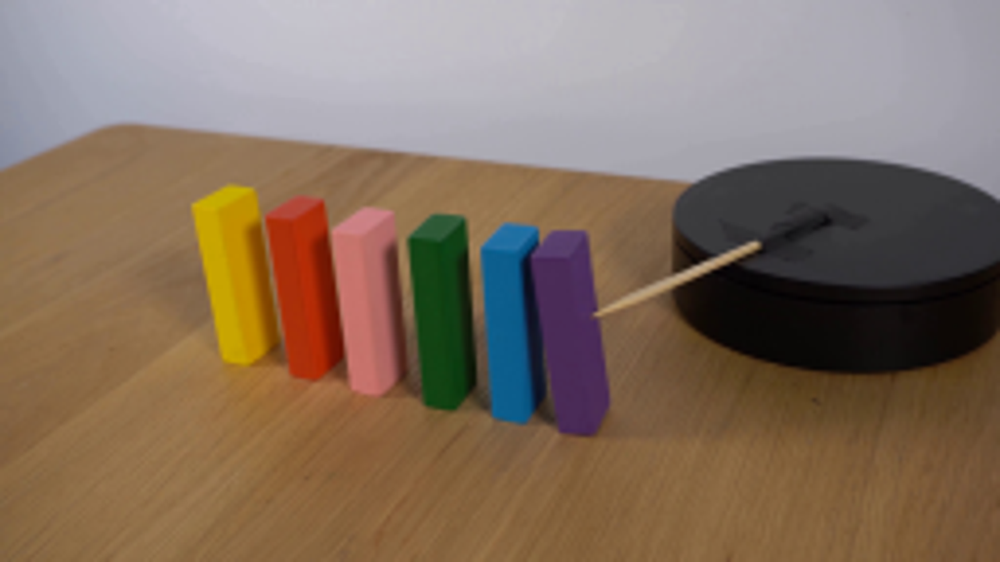
视觉工具实际返回图片 2
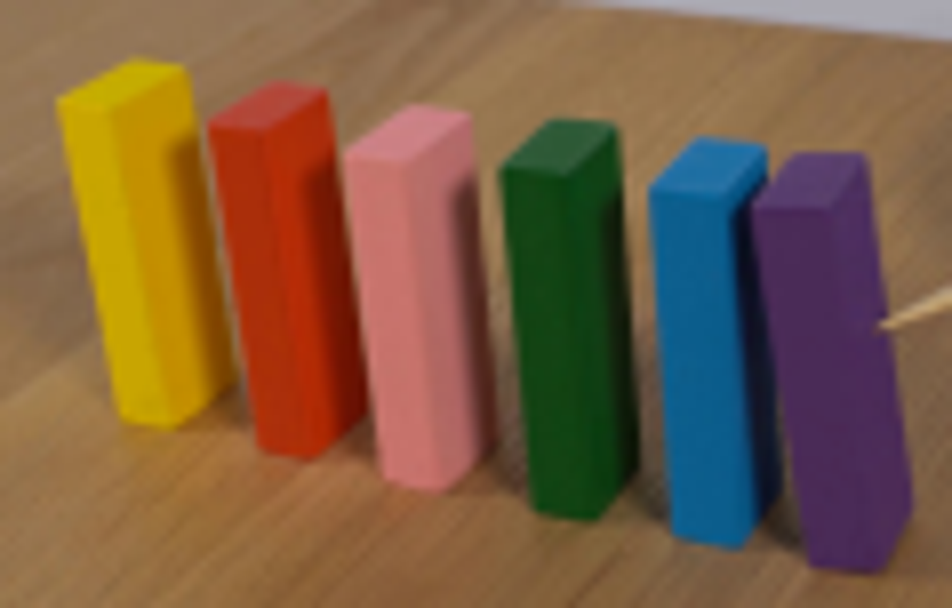
视觉工具实际返回图片 3
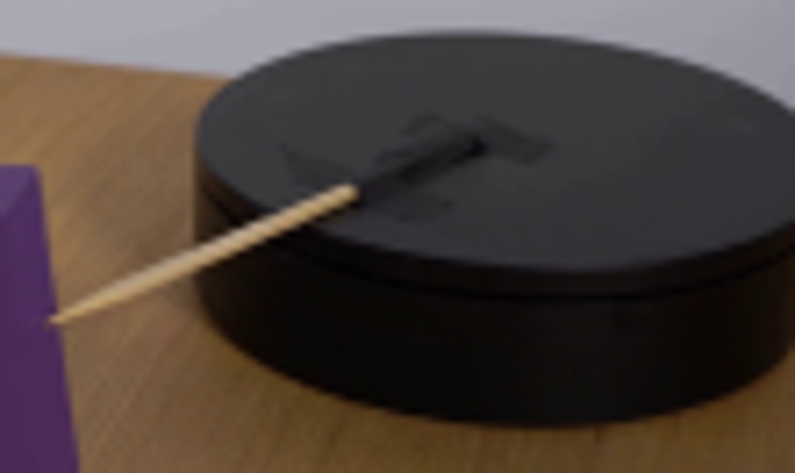
视觉工具实际返回图片 4
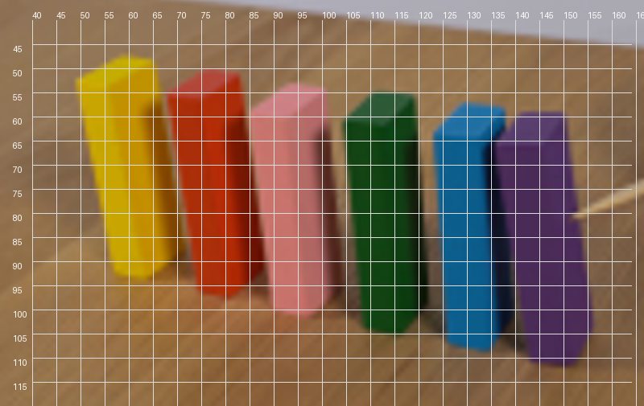
视觉工具实际返回图片 5
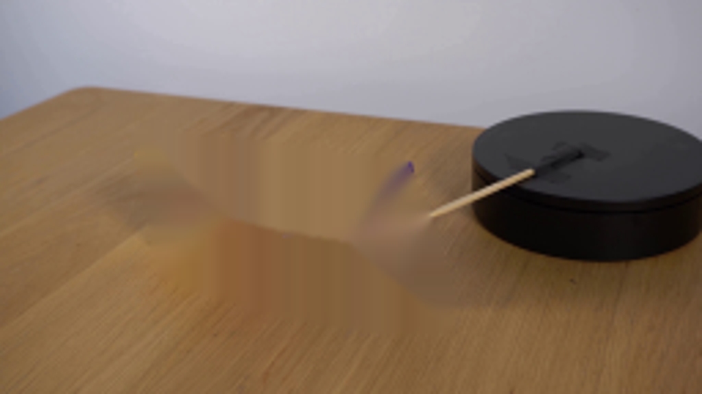
视觉工具实际返回图片 6

视觉工具实际返回图片 7
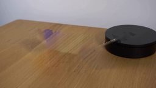
视觉工具实际返回图片 8
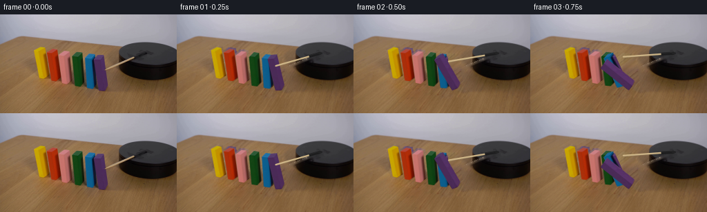
视觉工具实际返回图片 9
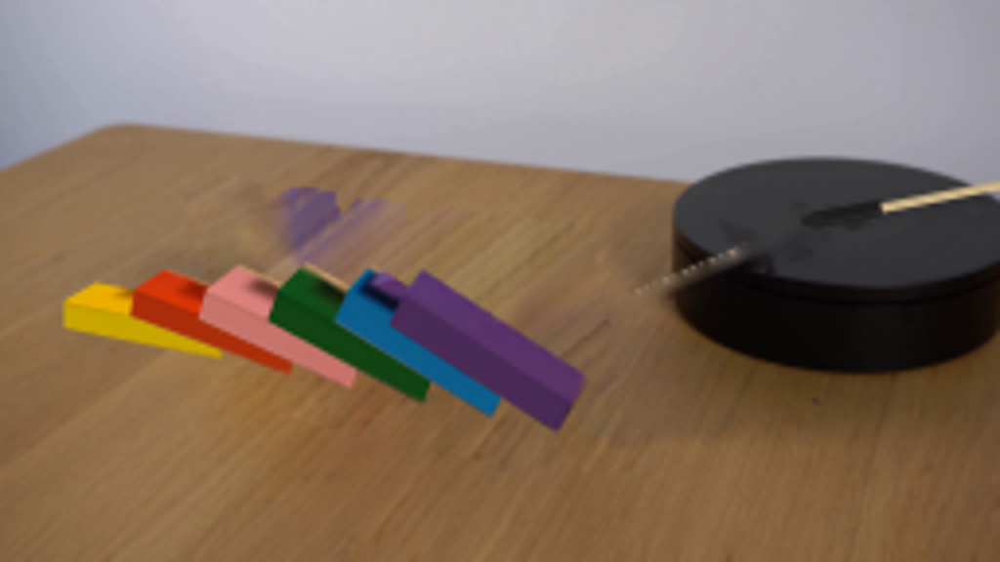
视觉工具实际返回图片 10
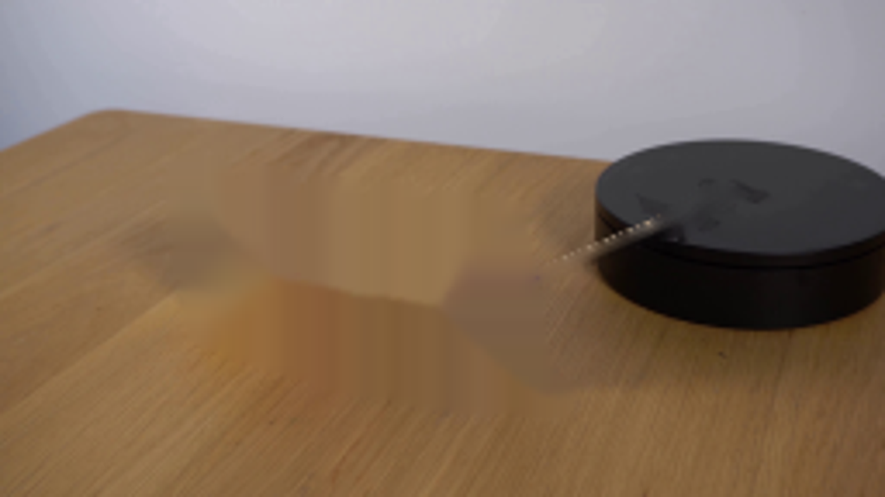
视觉工具实际返回图片 11
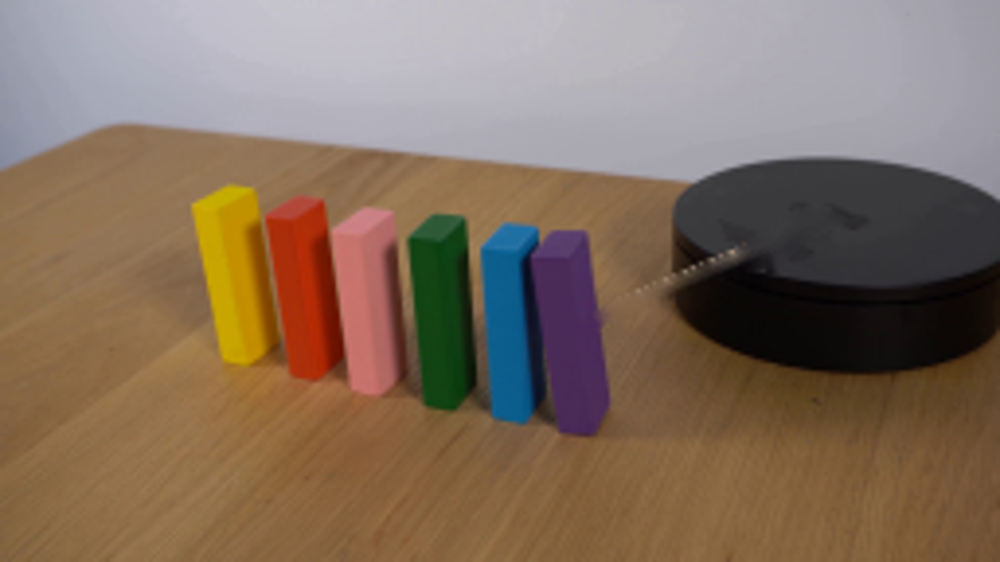
视觉工具实际返回图片 12
视觉工具实际返回图片 13

视觉工具实际返回图片 14
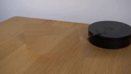
视觉工具实际返回图片 15

视觉工具实际返回图片 16

视觉工具实际返回图片 17
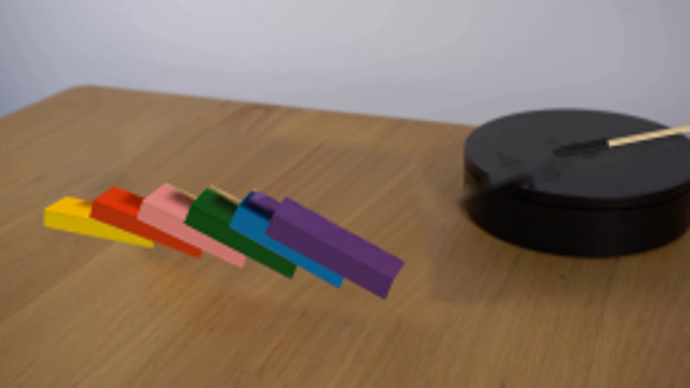
保存候选 5 份；完成命令 14 次；可验证图片返回 17 张。原始 API 响应与完整日志保留在本地。